Hydromechanical Power Split CVT with Engine
This example models a vehicle with a hydromechanical power split continuously variable transmission (CVT). It contains the engine, CVT, and longitudinal vehicle with four-wheel drive. This model enables:
- Powertrain efficiency studies to evaluate different technologies and designs to determine where power is lost
- Powertrain control design to create algorithms in Simulink and Stateflow that control the engine and CVT.
(return to Wheel Loader Design with Simscape Overview)
Contents
- Model
- Vehicle with CVT Subsystem
- Transmission Variant Subsystems
- Power Split Hydromechanical CVT Subsystem
- Hydrostatic Transmission Subsystem
- Abstract CVT Subsystem
- Driveline Subsystem
- Tires and Body Subsystem
- Simulation Results: Load Cycle, Power Split CVT
- Simulation Results: Load Cycle, Abstract CVT
- Simulation Results: Accelerate and Decelerate, Hydrostatic CVT
- Comparison of CVT Models
- Explore Effect of Hydraulic Regenerative Braking
Model
This example models a vehicle with a hydromechanical power split continuously variable transmission (CVT).
Vehicle with CVT Subsystem
Models engine, transmission, and vehicle. The engine can be configured to have droop control or a simple PI control. The transmission can be swapped between multiple options to explore different technologies or to select a fidelity level appropriate for the current test. The vehicle model includes the driveline and chassis.
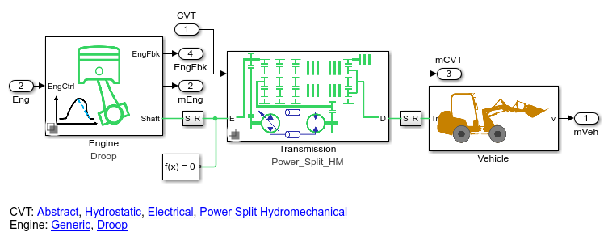Transmission Variant Subsystems
Three options for modeling the CVT are included in the model. Using variant subsystems, one of them can be activated for a test. The subsystems all have the same interface, which includes a mechanical connection to the engine and a mechanical connection to the driveline. Intefaces based on physical connections are particularly well-suited to swapping between models of different technologies or fidelity.
Power Split Hydromechanical CVT Subsystem
Transmission with four planetary gears, clutches, and a parallel power path through a hydrostatic transmission. A hydraulic regenerative braking system is also included to improve fuel economy by storing kinetic energy as pressure in an accumulator.
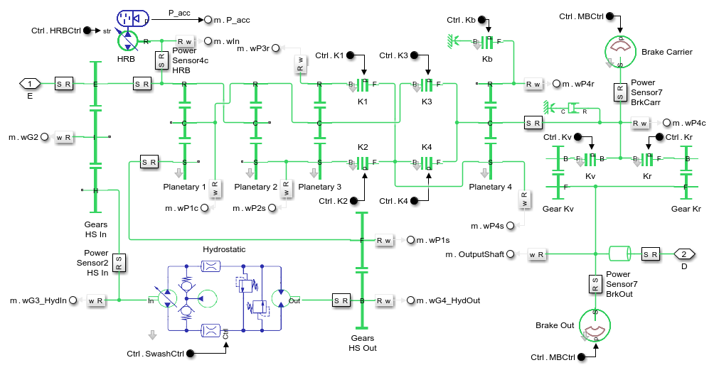Hydrostatic Transmission Subsystem
Hydrostatic transmission with variable-displacement pump and fixed-displacement motor. This system alone can also serve as a CVT, but it is not as efficient as the power-split design, as the mechanical path has a higher efficiency.
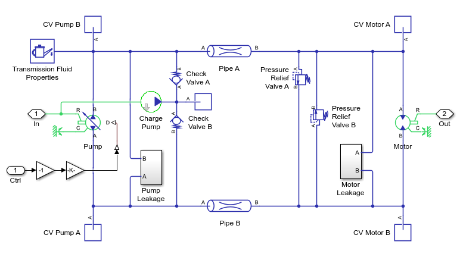Abstract CVT Subsystem
Models a CVT as a variable ratio gear. This model can be used in early stages of development to refine requirements for the transmission. It can also be tuned to match a more detailed model of the CVT so as to provide accurate behavior with less computation.
Driveline Subsystem
Models a four-wheel drive driveline. The output of the CVT connects to the output transfer gear which is connected via differentials to all four wheels.
Tires and Body Subsystem
Models the chassis and tires of the vehicle.
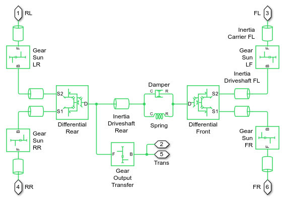Simulation Results: Load Cycle, Power Split CVT
Run load cycle with the power split CVT.
Elapsed Sim Time = 18.0033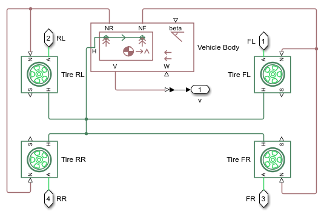 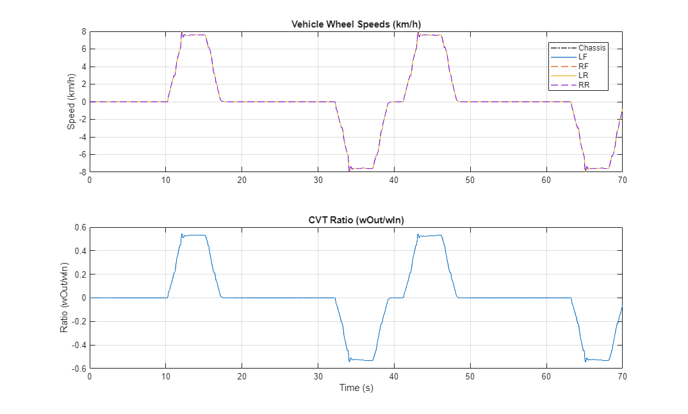 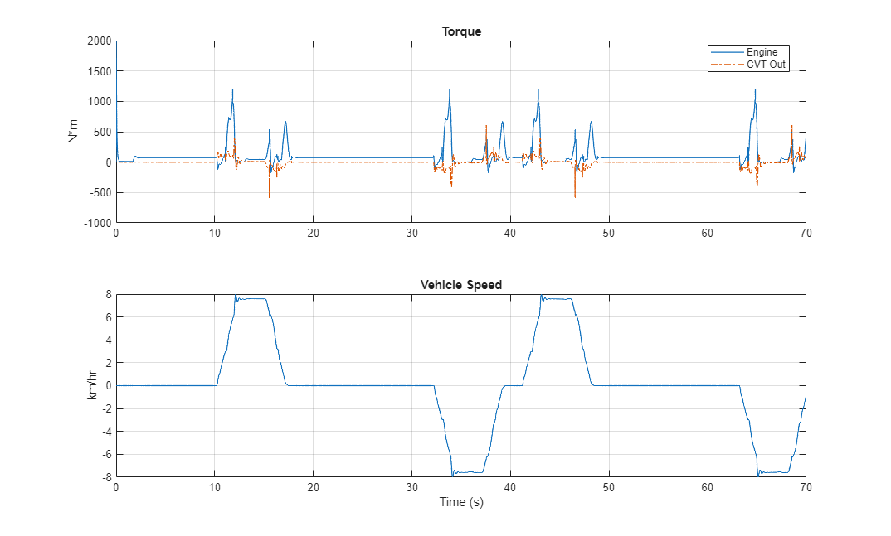 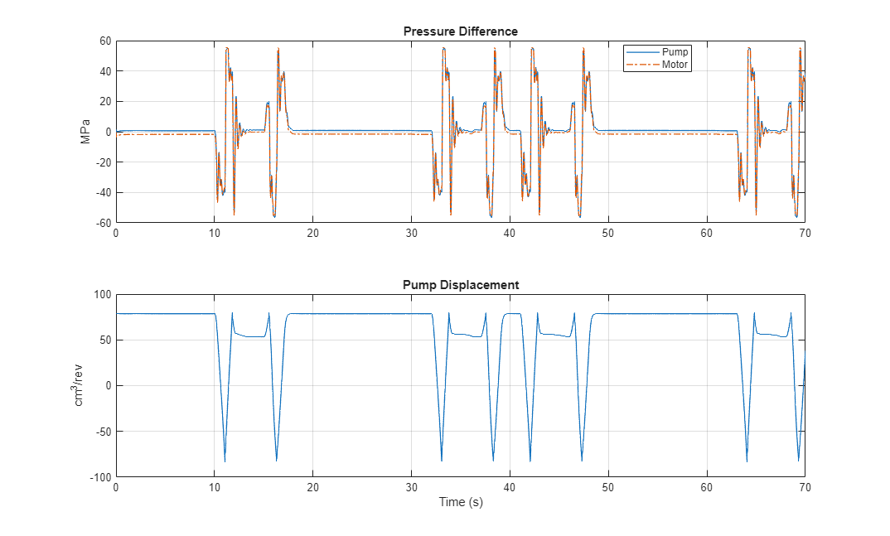
Simulation Results: Load Cycle, Abstract CVT
Run load cycle with the abstract split CVT.
Elapsed Sim Time = 1.7655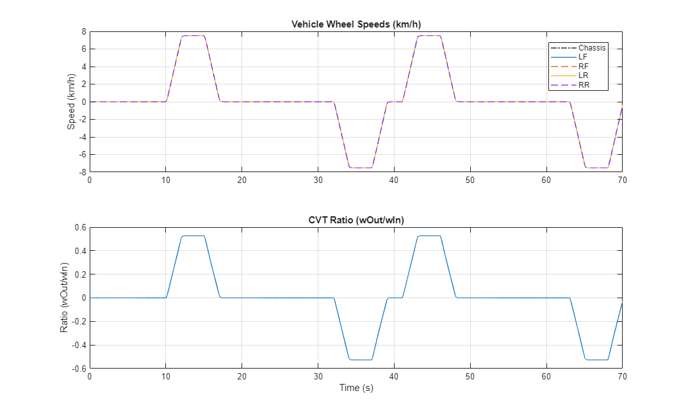
Simulation Results: Accelerate and Decelerate, Hydrostatic CVT
Run load cycle with the abstract split CVT.
Elapsed Sim Time = 2.5626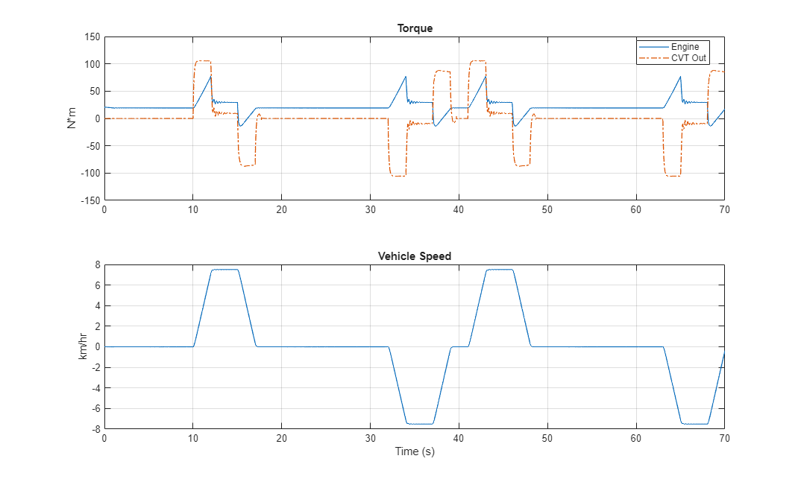 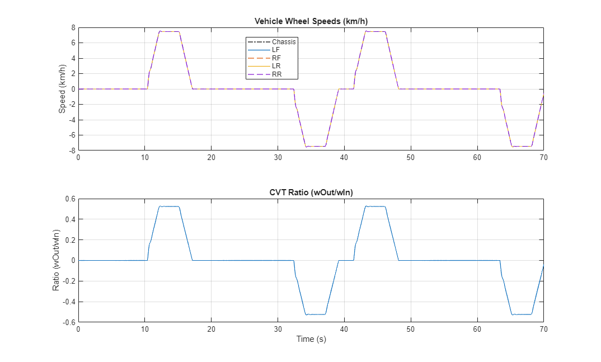 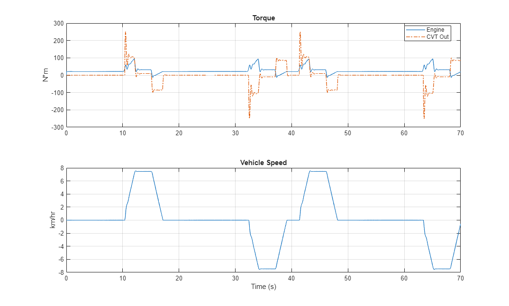
Comparison of CVT Models
The following plot compares the input torque for tests with the power split CVT and the abstract CVT models. This load cycle has long periods of time where the loader is not moving. During periods when the loader is standing still, the power split CVT has higher losses because the hydrostatic transmission and other shafts are spinning.
Explore Effect of Hydraulic Regenerative Braking
The following plot compares a test with and without the hydraulic regenerative braking (HRB) system. The HRB stores energy in an accumulator during braking events, and releases that energy to accelerate the vehicle. This system increases the efficiency of the vehicle and reduces the demand on the engine.
The plot below shows an acceleration and deceleration profile. During the acceleration phase (between 11 and 12 seconds), the engine needs to provide more power if the HRB is disabled. During the deceleration phase, the sign of the HRB power is negative indicating energy is being stored in the HRB.
Elapsed Sim Time = 17.5709 Elapsed Sim Time = 17.3053